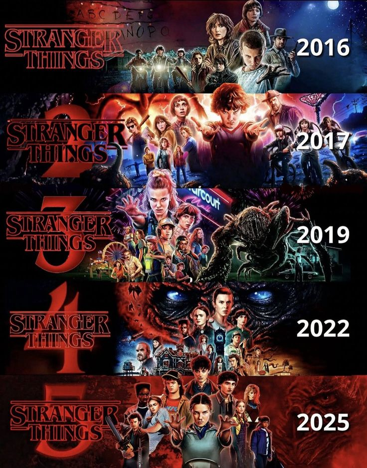

La trama principal de 'Stranger Things' gira en torno a un elenco destacado:
Estos actores han sido clave para el éxito de la serie, representando a un grupo de niños enfrentando fenómenos sobrenaturales en Hawkins, Indiana. Su química y desarrollo característico han generado una fuerte conexión con los espectadores.
